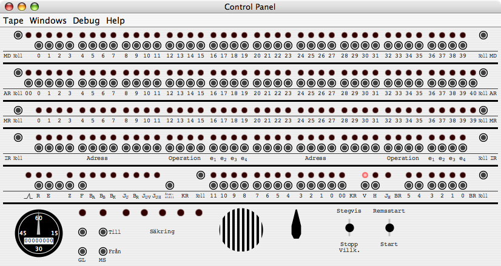
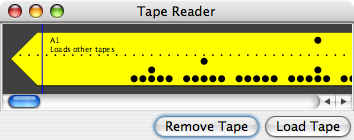
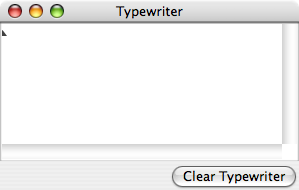

SMILemu
A Quick Start Guide
Getting SMILemu
The emulator is made available in three forms:
Starting SMILemu
To run SMILemu.app under Mac OS X, you only need to double-click
it, which
will locate the appropriate Java 5 runtime and launch the emulator. On
other platforms such as Microsoft Windows XP, you may be able to
double-click SMILemu-1.2.jar, which in turn launches the Java Runtime
and the emulator. Otherwise, you may have to manually launch the
emulator from a commend-line terminal, usually with the command
java -jar SMILemu-1.2.jar
Once SMILemu has started, you will be presented with its three
default windows.
Control Panel

Tape Reader

Typewriter

To give you a quick flavor of operating SMIL, we shall load and run one of the programs included with the emulator:
- Press the rightmost toggle switch (at the bottom right of the control panel)
to its upper position, labeled 'Remsstart' (by clicking with the mouse just underneath where Remsstart
is printed on the panel).
You should see several lights on the panel light up in the center of the bottom row of lights-and-buttons. Those lights show the contents
of to KR register, the program counter.
- Press the same rightmost
toggle switch to the 'Start' (lower) position. The Control Panel should briefly (for about 2 seconds) show a flurry of activity,
leaving some more lights lit than before, and the Tape Reader should now show the trailing end of the tape.
-
From the 'Tape' menu at the top of the Control Panel (or on Mac OS X, on the Menu Bar), select 'Load Standard Tape' > 'Sine Wave'. This
loads a different tape into the Tape Reader and positions the reader at the beginning of the tape.
-
Now press the right toggle switch to 'Start' again (not 'Remsstart'). This will once more cause a flurry
of activity, reading the tape into the emulator and leaving the Tape Reader at the end of the tape.
- Click on the button just above the label 'IR Noll' at the left, just below half height of the Control Panel. This clears the
left half of that line of lights. Now, using the buttons underneath the individual lights, set the value of those 20 bits to
0100 0000 0101 1001 0000 (where 1s indicate the the light should be lit, i.e.,
you need to press the button underneath the light), which is 40590 in base 16 (aka 'hexadecimal' or 'hex'). (If you make a mistake, just
click the 'IR Noll' button again, and start over.) This places the
instruction 'Jump to address 405 left' into the left half of the instruction register.
- Click on the button labeled 'KR Noll' just left of center on the bottom row of lights-and-buttons, which is straight below the
last bit you should have turned on on the IR register. This clears the program
counter, on the process instructing it to next execute the instruction in the left half of the instruction register.
- Finally, press the right toggle switch to 'Start' again. This will execute the jump instruction in the left half of IR, which
jumps to the beginning of the Sine Wave program we loaded earlier - and begins to print a sine wave on the Typewriter, using spaces
and + characters, all while the control panel should show lots of activity.
To stop the program, press the left toggle switch to its upper 'Stegvis' position. This sets SMIL to run in
single-step mode. Unlike the right toggle switch,
the left one does not automatically return to its center position when you release the mouse; in order to return it to its center,
and thus return SMIL to its normal running mode, you need to click in the center position for the toggle switch.
Congratulations - you have just run your first program on the emulated SMIL, and possibly had your first experience of what computing
was like in 1956! To learn more about both SMIL the computer and SMILemu the emulator please read the SMIL Emulator Manual.
Copyright © 2006 Christian Brunschen